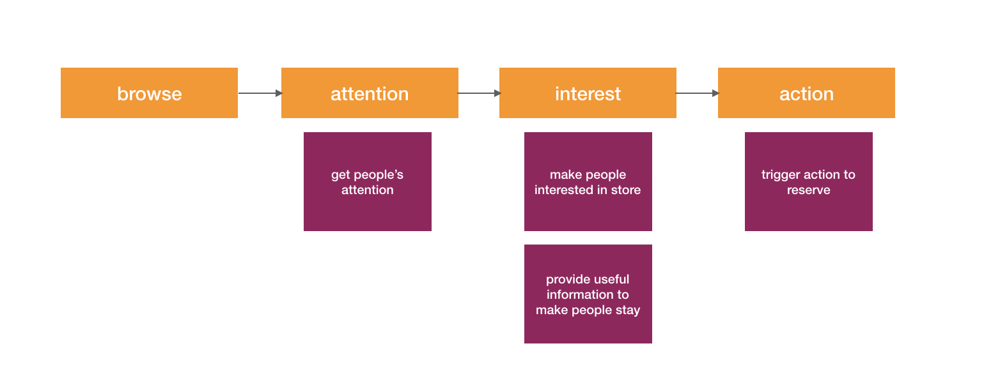
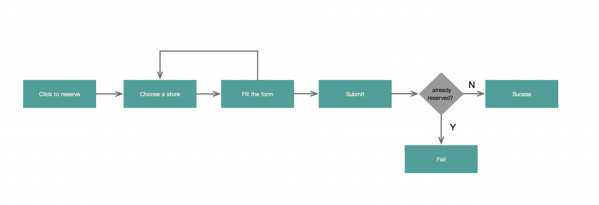
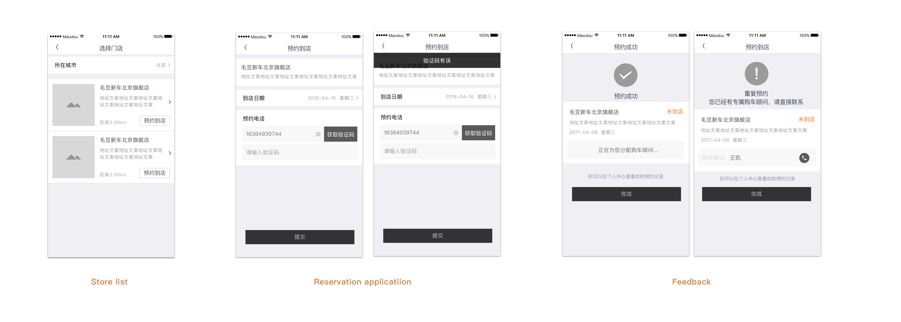
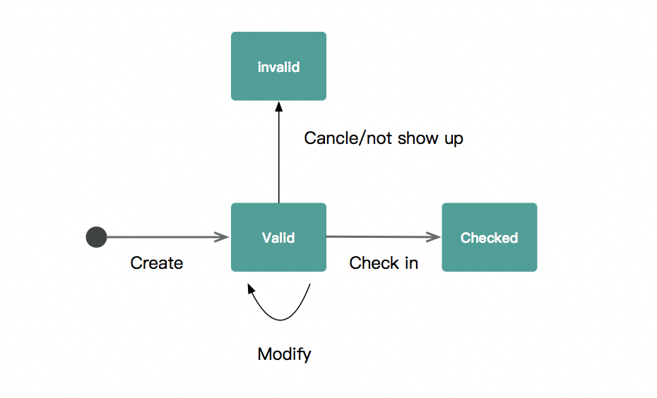
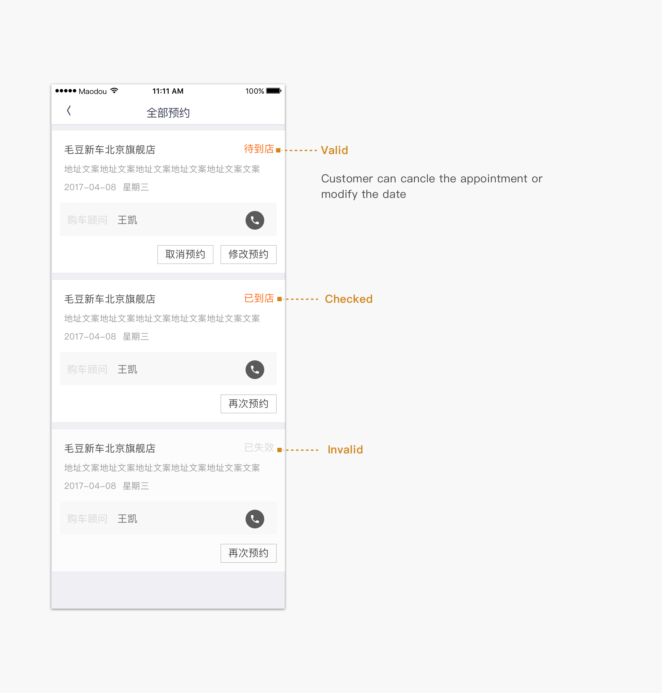
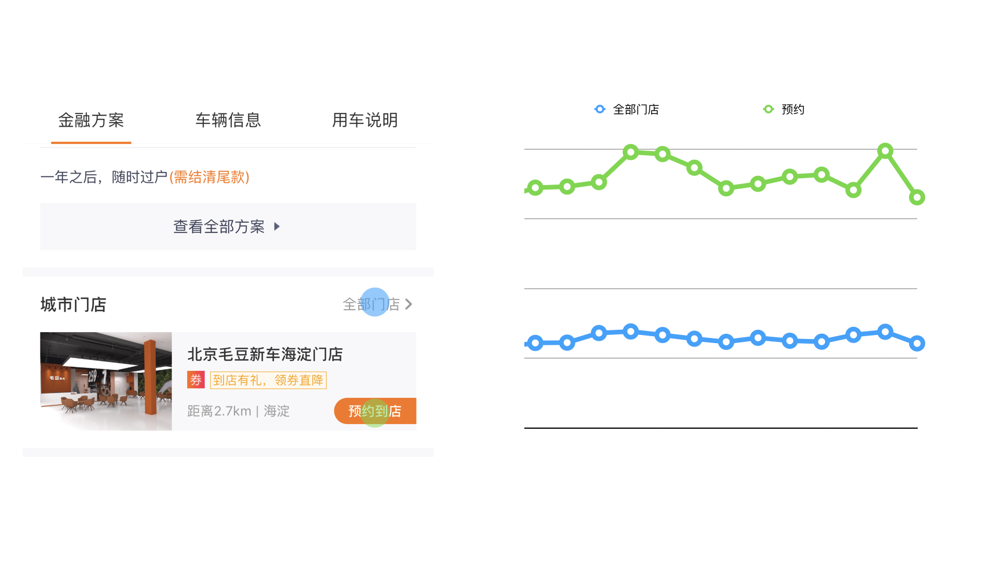

Bring customers to offline stores from online platform
Project time：2018.04
Before 2018，customers of Madou could only browse information of cars online. Since 2018, Maodou has been setting up stores all over China for customers to see cars in reality or communicating with sales agents.
We promote online reservation for offline stores withe following business goals in mind:
The northernstar metric is：ratio of store reservation over all reservation.
How we helped with business
We defined the stages of how customer reserves for an appointment and how design can help to maximize the business goals.
Primary route for a customer to reserve an appointment
We placed the store information on second section of description page, as price is the most important information when a customer is choosing a car.
We defined the necesary information a customer would need for decision making and a call to action botton to invate the customer to reserve immidiately.
How we made reservation system works
Design is to deal with constrains
Example constrain:
We defined all the use cases the system allows
Use case：reserve a new appointment
screen design
We analyzed how many states a reservation ticket has and how the states transfer from each other.
 After the function has been lanuched, we collected data and analyzed what customers do.
We collected following kinds of data:
We found out the reservation button attracted more clicks than links to store lists, which might indicate that the call to action button has positive impact in trigger customer's action
